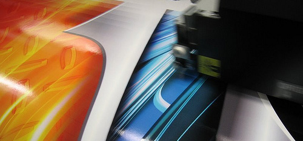
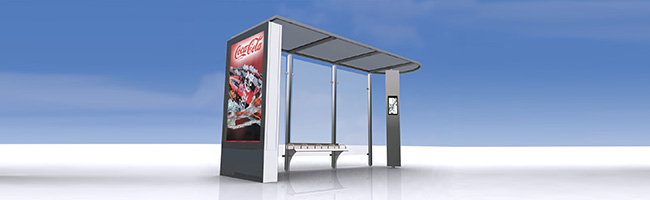
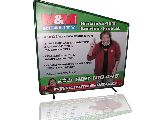
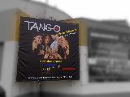
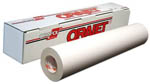
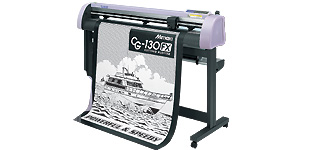
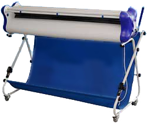
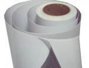

Velkoplošný tisk
Skvělá technika posledních let. To co si kdysi mohly dovolit jen ty opravdu bohaté nadnárodní společnosti, můžeme nabídnout i tomu nejmenšímu prodejci hotdogů. Tisk na samolepící fólie, bannery, vlajkoviny, foto papír, atd... Prostě věci nevídané. Tiskneme plakáty, billboardy, samolepící fólie, autoplachty, poutače, reklamní stojany, vlajky, transparenty, backlighty, shop displeje, grafika na auta, okenní fólie a podlahová grafika, ...
Jak připravit data na tisk?
- pracujeme na PC
- soubory máme nejraději jako tiff, jpg, eps, pdf, psd, cdr, ai
- data pro interiéové tisky vytvářejte v měřítku 1:1, 70 až 250 dpi
- data pro exteriérové tisky až 1:10, max 200 dpi (billboardy cca 50 dpi)
- data přijímáme: CD/DVD, flash disk, e-mail, úschovna.cz
- grafiku přijmeme v RGB nebo CMYK prostoru
- v případě přesných Pantone barvev si vyžádejte kontrolní nátisk
Plakáty, citylights, billboardy
Plakáty
Plakáty jsou stále nejrozšířenější tiskovinou. Jsou vylepovány na frekventovaných místech, kde působí na širokou veřejnost s cílem upoutat pozornost a propagovat. Mohou být černobílé nebo plnobarevné, rozměry vychází z normalizovaných formátů. Tiskovou techniku volíme v závislosti na rozměrech, počtu kusů, způsobu použití (v interiéruči exteriéru, jednostranný nebo oboustranný, apod.) a požadované životnosti plakátu. Pro prodloužení životnosti plakátu lze papír nalakovat tiskařským lakem nebo zalaminovat.
Citylights
Citylights - světelné reklamní plochy. Tento často pro kampaně využívaný reklamní prvek je velmi reprezentativní a dokáže velice dobře upoutat. Tiskneme na lesklý papír pro interiérové i exteriérové tisky fotografické kvality.
Billboardy
Bílý tiskový papír s modrou zadní stranou, určený pro tisk billboardů. Papir se vyznačuje vyšší pevností a vyšší odolností proti vlivům počasí. Je vhodný pro exteriérové aplikace.
Reklamní plachty - banery, MESH
Reklamní plachty jsou oblíbeným a velmi užívaným způsobem prezentace firmy, vašich produktů či služeb. Plachty se umísťují nejčastěji na ploty, fasády budov, bilboardy nebo do interiérů. Nejběžnějším a z pohledu cena/výkon nejefektivnějším řešením je použití PVC bannerů.
Vyrábíme PVC bannery pouze z těch nejkvalitnějších materiálů. Samozřejmostí je zdvojení a zavaření okrajů na přání zákazníka. Jednorázové bannery pro krátkodobé použití nebo umístění v exteriérech jsou bez zdvojení okrajů, což činí cenu ještě příznivější, přičemž toto řešení je efektivnější než při použití billboardového papíru. Všechny naše reklamní plachty jsou osazeny kovovými oky pro jejich správné vypnutí a rozložení váhy.
Mezi našimi produkty naleznete tři základní typy bannerů:
- Frontlit je nejpoužívanější, klasické provedení reklamních plachet.
- Blockout je světlo nepropustný a neprůhledný materiál s černou mezivrstvou. Díky tomu je vhodný pro výrobu oboustranně tištěné reklamy. Vhodný také pro interiérové aplikace (roll-up, prezentační stojany), určen k oboustrannému potisku
- MESH je perforovaný materiál, který díky své vyšší propustnosti lépe odolává větru. Při instalaci banneru před okna budovy je MESH ze zadní strany částečně průhledný a pro uživatele vnitřních prostorů tedy příjemnější.
V případě, že nemáte doposud vlastní grafický návrh, využijte našich grafických a poradenských služeb. Rádi pomůžeme přenést Vaše představy na plochu. A jsme schopni také provést odbornou montáž zhotovené reklamní plachty. Pokud nevlastníte odpovídající místo a nevíte, kam svou reklamu umístit, můžete využít našich služeb a my Vám vhodné místo za příznivou cenu zajistíme.
Samolepky - samolepící fólie
Samolepky jsou grafické či textové prvky nejrůznějších rozměrů a tvarů vyrobené ze samolepícího papíru nebo matné samolepící fólie z polyetylénu. Papírové se ve většině případů vyrábějí laserovým digitálním tiskem, jejich výhodou je možnost snadno je popisovat či označovat razítkem apod. Proto jsou vhodné například jako popisovací štítky, etikety na láhve, jmenovky, apod...
Vyrábějí se z matné samolepicí fólie z polypropylenu v těchto provedeních:
- monomerické - nejběžnější typ samolepek. Typickým využitím jsou polepy výloh, vývěsní štíty, informační a bezpečnostní značky apod.
- polymerické - optimální řešení samolepek, jež vyžadují zvýšenou odolnost nebo prodloužení životnosti.
- lité - díky svým vlastnostem jsou vhodné pro polep oblých, zakřivených či jinak nerovných ploch. Jsou proto nejčastěji využívány pro celoplošný polep dopravních prostředků.
Tyto fólie jsou pak potištěny v plotru solventnímy inkousty a případně je tento tisk chráněn ještě laminací. Samolepky je možno dále ořezávat na rozměr, který nemusí být pravidelný a může vytvářet konturu kolem samolepky, nebo usnaďňovat jejich aplikaci (např. čísla na skřínky do šaten).
 Laminace
Laminace je používaná jako ochranná transparentní folie na všechny druhy samolepek. Ochrání samotný tisk například před UV zářením (blednutí tisku), na autech pomůže samolepku ochránit před poškrábáním od drobných kamínků a tím zajistí delší životnost. Laminaci můžeme nabídnout jak lesklou, tak matnou. Matná laminace umí také šikovně schovat nerovnosti povrchu na které je samolepka nalepena. Například starší pokroucený štít vypadá s novou matně zalaminovanou samolepkou jako nový a deformovaný plast není tolik vidět. Laminace kladně ovlivňuje barevnost tisku a barvy se stávají sytější.
One-way vision (děrovaná)
Díky jednostranně viditelné grafice a snadné průhlednosti z druhé strany jsou určeny především pro aplikaci na okna dopravních prostředků, výloh obchodů a dalších prosklených ploch pro reklamní účely.
Okenní folie
Jejich funkcí je zlepšení estetické stránky prosklených prostor a zvýšení soukromí v prosklených prostorech (fólie znemožňují průhled při zachování vysoké průchodnosti světla). Oproti pískování či broušení skla tyto fólie mají mnoho nesporných výhod, jako snadná a finančně nenáročná možnost změny vzhledu či návrat k původnímu čirému sklu, zvýšení bezpečnosti (při rozbití skla nedojde k okamžitému úplnému rozsypání střepů) a mnohé další.
